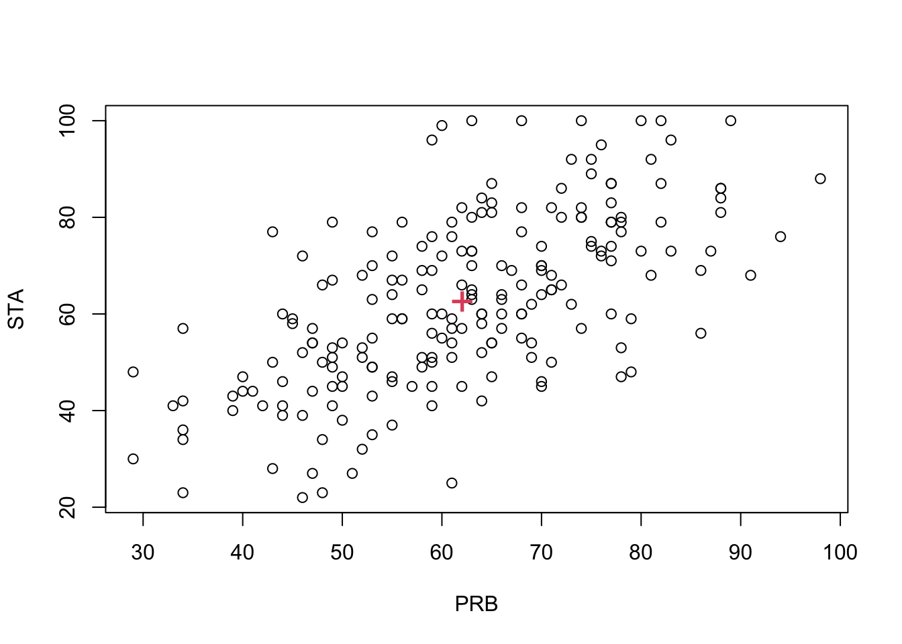

7.4 Inference based on the MVN
In univariate statistical analysis, you will have seen how to do hypothesis testing for the mean of a population.
In the case where you have a single sample \(x_1, \ldots, x_n\) which come from a population with known variance \(\sigma^2\) we use a z-test when testing hypotheses such as \(H_0: \mu=\mu_1\).
When the variance of the population, \(\sigma^2\), is unknown, then we have to use a t-test.
When we have two samples, \(x_1, \ldots, x_n\) and \(y_1, \ldots, y_m\), we use either a paired or an unpaired t-test.
We now develop analogous results in the multivariate case. The role of the Student \(t\)-distribution will be played by Hotelling’s \(T^2\), and the role of the \(\chi^2\) is played by the Wishart distribution.
The next three subsections deal with the multivariate equivalent of the three situations listed above. Before we do, lets quickly recap how hypothesis testing works:
Recap of hypothesis testing framework
Suppose that we have a null hypothesis \(H_0\) represented by a completely specified model and that we wish to test this hypothesis using data \(x_1, \ldots, x_n\). We proceed as follows
Assume \(H_0\) is true.
Find a test statistic \(T(x_1, \ldots, x_n)\) for which large values indicate departure from \(H_0\).
Calculate the theoretical sampling distribution of \(T\) under \(H_0\).
The observed value \(T_{obs}=T(x_1, \ldots, x_n)\) of the test statistic is compared with the distribution of \(T\) under \(H_0\). Then either
- (Neyman-Pearson) reject \(H_0\) if \(T_{obs}>c\). Here \(c\) is chosen so that \(\mathbb{P}(T\geq c| H_0)=\alpha\) where \(\alpha\) is the size of the test, i.e., \(\mathbb{P}(\mbox{reject } H_0 | H_0 \mbox{ true})=\alpha\).
- (Fisherian) compute the p-value \(p=\mathbb{P}(T\geq T_{obs}|H_0)\) and report it. This represents the strength of evidence against \(H_0\).
7.4.1 \(\boldsymbol{\Sigma}\) known
Let \(\mathbf x_1,\ldots,\mathbf x_n\) be a random sample from \(N_p({\boldsymbol{\mu}},\boldsymbol{\Sigma})\) where \({\boldsymbol{\mu}}= (\mu_1,\ldots,\mu_p)^\top\). Suppose we wish to conduct the following hypothesis test \[H_0: {\boldsymbol{\mu}}= \mathbf a\mbox{ vs } H_1: {\boldsymbol{\mu}}\neq \mathbf a\] where \(\mathbf a\) is fixed and pre-specified. Let’s first assume that \(\boldsymbol{\Sigma}\) is known. This will result in the multivariate analogue of the z-test.
One approach would be to conduct \(p\) separate univariate z-tests tests with null hypotheses
\[H_0: \mu_i = a_i \qquad \text{vs.} \qquad H_1: \mu_i \neq a_i, \quad \mbox{for } i=1,\ldots,p.\]
However, this ignores possible correlations between the variables - see the example for a situation in which this can make a difference.
A better approach is to conduct a single (multivariate) hypothesis test using the test statistic \[ \zeta^2 = n(\bar{\mathbf x}-\mathbf a)^\top \boldsymbol{\Sigma}^{-1} (\bar{\mathbf x}-\mathbf a). \]
We need to compute the distribution of \(\zeta^2\) when \(H_0\) is true. Note that
\[
\zeta^2 = (n^{1/2}\bar{\mathbf x}-n^{1/2}{\boldsymbol{\mu}})^\top \boldsymbol{\Sigma}^{-1} (n^{1/2}\bar{\mathbf x}-n^{1/2}{\boldsymbol{\mu}}).
\]
Recall that \(\bar{\mathbf x} \sim N_p({\boldsymbol{\mu}}, \frac{1}{n} \boldsymbol{\Sigma})\), and that therefore \(n^{1/2} \bar{\mathbf x} \sim N_p(n^{1/2} {\boldsymbol{\mu}}, \boldsymbol{\Sigma})\). Applying Proposition
Proposition 7.3 we thus see that
\[\zeta^2\sim \chi_p^2\]
when \(H_0\) is true.
Thus to conduct the hypothesis test, we compute \(\zeta^2\) for the observed data, and if the value is large compared to a \(\chi^2_p\) distribution, we reject \(H_0\).
The Neyman-Pearson approach is to define a critical region and reject \(H_0\) if \(\zeta^2 > \chi^2_{p,\alpha}\), where \(\chi^2_{p,\alpha}\) is the upper \(\alpha\) quantile of the \(\chi^2_p\) distribution, i.e., \(\mathbb{P}(\chi^2_p > \chi^2_{p,\alpha})=\alpha\).
The Fisherian approach is to state the result as a \(p\)-value where \(p = \mathbb{P}(\chi^2_p > \zeta_{\text{obs}}^2)\), and \(\zeta_{\text{obs}}^2\) is the observed value of the statistic \(\zeta^2\).
The multivariate equivalent of a confidence interval is a confidence region and the \(100(1-\alpha)\)% confidence region for \({\boldsymbol{\mu}}\) is \(\{ \mathbf a: \zeta^2 \leq \chi^2_{p,\alpha} \}\). This confidence region will be the interior of an ellipse or ellipsoid.
Example
Consider again the exam marks for first year maths students in the two modules PRB and STA. The scatterplot below shows the module marks for \(n=203\) students on probability (PRB, \(x_1\)) and statistics (STA, \(x_2\)), with the sample mean vector \(\begin{pmatrix}62.1 \\62.7 \\\end{pmatrix}\) marked on as a red ‘+’.

The target for the module mean for a large population of students should be exactly 60 for both modules. We now conduct a hypothesis test to see if the lecturers have missed the target and made the exam too difficult. We will test the hypotheses \(H_0\) versus \(H_1\) at the 5% level where \[ H_0: {\boldsymbol{\mu}}= \begin{pmatrix} 60 \\ 60 \end{pmatrix} \qquad \text{and} \qquad H_1: {\boldsymbol{\mu}}\neq \begin{pmatrix} 60 \\ 60 \end{pmatrix}. \]
Let’s assume to begin with that observations \(\mathbf x_1,\ldots,\mathbf x_{203}\) are a random sample from \(N_2({\boldsymbol{\mu}},\boldsymbol{\Sigma})\) where \[ \boldsymbol{\Sigma}= \begin{pmatrix} 200 & 150 \\ 150 & 300 \end{pmatrix} \] is assumed known.
The test statistic is \[\begin{align*} \zeta^2 &= 203 \begin{pmatrix} 62.1 - 60 \\ 62.7 - 60 \end{pmatrix}^\top \begin{pmatrix} 200 & 150 \\ 150 & 300 \end{pmatrix}^{-1} \begin{pmatrix} 62.1 - 60 \\ 62.7 - 60 \end{pmatrix}\\ &=5.84 \end{align*}\]
Under \(H_0\), \(\zeta^2\sim \chi^2_2\). and so the critical value is \(\chi^2_{2,0.05} = 5.991\).
qchisq(0.95, 2)## [1] 5.991465The plot below shows the density of a \(\chi^2_2\) random variable. The vertical red line shows the critical value, the vertical black line the observed value, and the shaded region shows the critical region. As \(\zeta^2 < \chi^2_{p,0.05}\) we can see that we do not reject the null hypothesis at the 5% level.

The \(p\)-value is
1-pchisq(zeta2, 2)## [,1]
## [1,] 0.05389049which is the area of the red shaded region.
Note that if we had conducted separate univariate hypothesis tests of \(H_0: \mu_1 = 60\) and \(H_0: \mu_2 = 60\) then the test statistics would have been: \[\begin{eqnarray*} z_1 &=& \frac{\bar{x}_1 - \mu_1}{\sqrt{\sigma_1^2/n}} = \frac{62-60}{\sqrt{200/203}} = 2.11 \\ z_2 &=& \frac{\bar{x}_2 - \mu_2}{\sqrt{\sigma_2^2/n}} = \frac{62-60}{\sqrt{300/203}} = 2.22. \end{eqnarray*}\] The critical value would have been \(Z_{0.025} = 1.960\) and both null hypotheses would have been rejected. Therefore we see that a multivariate hypothesis can be accepted when each of univariate components is rejected and vice-versa.
The \(95\)% confidence region is the interior of an ellipse, centred on \(\bar{\mathbf x}\), with the angle of the major-axis governed by \(\boldsymbol{\Sigma}\) (given by the eigenvectors of \(\boldsymbol{\Sigma}\)). We can see from the plot below that \((60,60)^\top\), marked with a cross, lies just inside the confidence region.
7.4.2 \(\boldsymbol{\Sigma}\) unknown: 1 sample
In the previous section we considered a hypothesis test of \[H_0: {\boldsymbol{\mu}}= \mathbf a\mbox{ vs } H_1: {\boldsymbol{\mu}}\neq \mathbf a\] based on an IID sample from \(N_p({\boldsymbol{\mu}},\boldsymbol{\Sigma})\) when \(\boldsymbol{\Sigma}\) was known. In reality, we rarely know \(\boldsymbol{\Sigma}\), so we replace it with the sample covariance matrix, \(\mathbf S\). Corollary 7.4 tells us that the distribution is then \(F_{p,n-p}\) rather than \(\chi^2_p\) as was the case when \(\boldsymbol{\Sigma}\) was known.
More specifically, we use the test statistic: \[\gamma^2 = \frac{n-p}{p} (\bar{\mathbf x}-\mathbf a)^\top \mathbf S^{-1} (\bar{\mathbf x}-\mathbf a),\] Corollary 7.4 tells us that when \(H_0\) is true, \[\gamma^2 \sim F_{p,n-p}.\] As before, depending upon our approach we either
(Neyman-Pearson approach) reject \(H_0\) if \(\gamma^2 > F_{p,n-p,\alpha}\), where \(\alpha\) is the significance level.
(Fisherian approach) compute the p-value \(p = \mathbb{P}(F_{p,n-p} > \gamma^2_{obs})\).
The \(100(1-\alpha)\)% confidence region for \({\boldsymbol{\mu}}\) is \(\{ \mathbf a: \gamma^2 \leq F_{p,n-p,\alpha} \}\), which will again be the interior of an ellipse or ellipsoid, but the confidence region is now determined by \(\mathbf S\) rather than \(\boldsymbol{\Sigma}\).
Example continued
We return to the example with the module marks for \(n=203\) students on probability (PRB, \(x_1\)) and statistics (STA, \(x_2\)), but now we assume that \(\boldsymbol{\Sigma}\) is unknown.
The sample mean and sample covariance matrix are \[\bar{\mathbf x} = \begin{pmatrix}62.1 \\62.7 \\\end{pmatrix} \qquad \mathbf S= \begin{pmatrix}191&155.6 \\155.6&313.5 \\\end{pmatrix}\] We conduct a hypothesis test at the 5% level of: \[H_0: {\boldsymbol{\mu}}= \begin{pmatrix} 60 \\ 60 \end{pmatrix} \qquad \text{vs.} \qquad H_1: {\boldsymbol{\mu}}\neq \begin{pmatrix} 60 \\ 60 \end{pmatrix}.\]
The test statistic is \[\begin{align*} \gamma^2 &= \frac{203-2}{2} \begin{pmatrix} 62.1 - 60 \\ 62.7 - 60 \end{pmatrix}^\top \begin{pmatrix}191&155.6 \\155.6&313.5 \\\end{pmatrix}^{-1} \begin{pmatrix} 62.1 - 60 \\ 62.7 - 60 \end{pmatrix} \\ &= 2.84. \end{align*}\] The critical value is \(F_{2,201,0.05}\)
qf(0.95, 2,201)## [1] 3.040828so \(\gamma^2 < F_{p,n-p,0.05}\) and we do not reject the null hypothesis at the 5% level.
The \(p\)-value is
1-pf(gamma2, 2, 201)## [,1]
## [1,] 0.06051421Thankfully, we don’t need to do all the computation ourselves whenever we want to do a test, as there are several R packages that will do the work for us:
library(ICSNP) # you'll need to install this package the first time
HotellingsT2(X, mu = mu)##
## Hotelling's one sample T2-test
##
## data: X
## T.2 = 2.8444, df1 = 2, df2 = 201, p-value = 0.06051
## alternative hypothesis: true location is not equal to c(60,60)Notice again the difference to the two univariate tests
t.test(X[,1], mu=60)##
## One Sample t-test
##
## data: X[, 1]
## t = 2.1581, df = 202, p-value = 0.0321
## alternative hypothesis: true mean is not equal to 60
## 95 percent confidence interval:
## 60.18121 64.01584
## sample estimates:
## mean of x
## 62.09852t.test(X[,2], mu=60)##
## One Sample t-test
##
## data: X[, 2]
## t = 2.1669, df = 202, p-value = 0.03141
## alternative hypothesis: true mean is not equal to 60
## 95 percent confidence interval:
## 60.24305 65.15596
## sample estimates:
## mean of x
## 62.69951The \(95\)% confidence region is the interior of an ellipse, centred on \(\bar{\mathbf x}\), with the angle of the major-axis governed by \(\mathbf S\). The confidence region is very slightly larger than when \(\boldsymbol{\Sigma}\) was known.
7.4.3 \(\boldsymbol{\Sigma}\) unknown: 2 samples
Suppose now we have data from two populations \(\mathbf x_1, \ldots, \mathbf x_n\) and \(\mathbf y_1,\ldots, \mathbf y_m\), and that we wish to test the difference between the two population means. As with the univariate case, there are two cases to consider:
Paired case
If \(m=n\) and there exists some experimental link between \(\mathbf x_i\) and \(\mathbf y_i\) then we can look at the differences \(\mathbf z_i = \mathbf y_i - \mathbf x_i\) for \(i=1,\ldots,n\). For example, \(\mathbf x_i\) and \(\mathbf y_i\) could be vectors of pre-treatment and post-treatment measurements, respectively, of the same variables. The crucial assumption is that the differences \(\mathbf z_i\) are IID \(N_p({\boldsymbol{\mu}}, \boldsymbol{\Sigma})\). To examine the null hypothesis of no difference between the means we would test
\[H_0: {\boldsymbol{\mu}}={\mathbf 0}_p \mbox{ vs } H_1: {\boldsymbol{\mu}}\neq {\mathbf 0}_p.\]
We then base our inference on \(\bar{\mathbf z} = \frac{1}{n} \sum_{i=1}^n \mathbf z_i = \bar{\mathbf y} - \bar{\mathbf x}\), and proceed exactly as in the 1 sample case, using the test in Secion 7.4.1 if \(\boldsymbol{\Sigma}\) is known, or else the test in Section 7.4.2 if with \(\mathbf S= \frac{1}{n} \sum_{i=1}^n (\mathbf z_i - \bar{\mathbf z})(\mathbf z_i - \bar{\mathbf z})^\top\).
Unpaired case
The unpaired case is where \(\mathbf x_i\) and \(\mathbf y_i\) are independent and not connected to each other. For example, in a clinical trial we may have two separate groups of patients, where one group receives a placebo and the other group receives an active treatment. Let \(\mathbf x_1,\ldots,\mathbf x_n\) be an IID sample from \(N_p({\boldsymbol{\mu}}_1,\boldsymbol{\Sigma})\) and let \(\mathbf y_1,\ldots,\mathbf y_m\) be an IID sample from \(N_p({\boldsymbol{\mu}}_2,\boldsymbol{\Sigma})\). In this case, we can base our inference on the following result.
Proof. We know that \(\bar{\mathbf x} \sim N_p \left({\boldsymbol{\mu}}_1,n^{-1}\boldsymbol{\Sigma}_1 \right)\) and \(\bar{\mathbf y} \sim N_p \left({\boldsymbol{\mu}}_2,m^{-1}\boldsymbol{\Sigma}_2 \right)\), and \(\bar{\mathbf x}\) and \(\bar{\mathbf y}\) are independent, so \[\bar{\mathbf y} - \bar{\mathbf x} \sim N_p \left({\boldsymbol{\mu}}_2 - {\boldsymbol{\mu}}_1, \frac{1}{n}\boldsymbol{\Sigma}_1 + \frac{1}{m} \boldsymbol{\Sigma}_2 \right).\] If \({\boldsymbol{\mu}}_1 = {\boldsymbol{\mu}}_2\) and \(\boldsymbol{\Sigma}_1 = \boldsymbol{\Sigma}_2 = \boldsymbol{\Sigma}\), then \(\bar{\mathbf y} - \bar{\mathbf x} \sim N_p \left(\boldsymbol 0_p, \left(\frac{1}{n} + \frac{1}{m} \right)\boldsymbol{\Sigma}\right)\) and \[\mathbf z= \left(\frac{1}{n} + \frac{1}{m} \right)^{-1/2} (\bar{\mathbf y} - \bar{\mathbf x}) \sim N_p(\boldsymbol 0_p,\boldsymbol{\Sigma}).\]
From Proposition 7.10 we know that \(n\mathbf S_1 \sim W_p(\Sigma_1,n-1)\) and \(m\mathbf S_2 \sim W_p(\Sigma_2,m-1)\). Therefore when \(\boldsymbol{\Sigma}_1 = \boldsymbol{\Sigma}_2 = \boldsymbol{\Sigma}\), \[\begin{eqnarray*} \mathbf M= (n+m-2)\mathbf S_u &=& (n+m-2)\frac{n\mathbf S_1 + m\mathbf S_2}{n+m-2} \\ &=& n\mathbf S_1 + m\mathbf S_2 \sim W_p(\boldsymbol{\Sigma},n+m-2) \end{eqnarray*}\] by Proposition 7.9, using the fact that \(\mathbf S_1\) and \(\mathbf S_2\) are independent.
Now \(\mathbf z\) is independent of \(\mathbf M\), since \(\bar{\mathbf x}\) and \(\bar{\mathbf y}\) are independent of \(\mathbf S_1\) and \(\mathbf S_2\), respectively, by Proposition 7.4. Therefore, applying Proposition 7.11 with \(\mathbf x= \mathbf z\) and \(\mathbf M= (n+m-2)\mathbf S_u\), we have \[\begin{align*} (n+m-2) \mathbf z^\top ((n+m-2)\mathbf S_u)^{-1} \mathbf z&= \mathbf z^\top \mathbf S_u^{-1} \mathbf z\\ &\sim T^2(p,n+m-2) \end{align*}\] and \[\begin{eqnarray*} \mathbf z^\top \mathbf S_u^{-1} \mathbf z&=& \left(\frac{1}{n} + \frac{1}{m} \right)^{-1/2} (\bar{\mathbf y} - \bar{\mathbf x})^\top \mathbf S_u^{-1} \left(\frac{1}{n} + \frac{1}{m} \right)^{-1/2} (\bar{\mathbf y} - \bar{\mathbf x}) \\ &=& \left(\frac{1}{n} + \frac{1}{m} \right)^{-1} (\bar{\mathbf y} - \bar{\mathbf x})^\top \mathbf S_u^{-1} (\bar{\mathbf y} - \bar{\mathbf x}). \end{eqnarray*}\] Finally, \[\left(\frac{1}{n} + \frac{1}{m} \right)^{-1} = \left(\frac{m}{nm} + \frac{n}{nm} \right)^{-1} = \left(\frac{n+m}{nm} \right)^{-1} = \frac{nm}{n+m},\] so Proposition 7.13 is proved.
As in the one sample case, we can convert Hotelling’s two-sample \(T^2\) statistic to the \(F\) distribution using Proposition 7.12.
Example continued
There are two different maths undergraduate programmes at the University of Nottingham: a 3-year (G100) and a 4-year (G103) programme. For the exam marks example, is there a significant difference between students registered on the two different programmes? Let \(\mathbf x_1,\ldots, \mathbf x_{131}\) be the exam marks of the G100 students and let \(\mathbf y_1,\ldots, \mathbf y_{72}\) be the exam marks of the G103 students. The data is shown below, with the sample means marked as large ‘+’ signs.

Let \({\boldsymbol{\mu}}_1\) and \({\boldsymbol{\mu}}_2\) be the population means for G100 and G103 respectively. Our hypotheses are \[H_0: {\boldsymbol{\mu}}_1 = {\boldsymbol{\mu}}_2 \qquad \text{vs.} \qquad H_1: {\boldsymbol{\mu}}_1 \neq {\boldsymbol{\mu}}_2.\]
We will assume that \[\begin{align*} \mathbf x_n, \ldots, \mathbf x_{131}&\sim N_2({\boldsymbol{\mu}}_1,\boldsymbol{\Sigma}_1)\\ \mathbf y_1,\ldots,\mathbf y_m &\sim N_2({\boldsymbol{\mu}}_2,\boldsymbol{\Sigma}_2). \end{align*}\]
The sample summary statistics are: \[\begin{eqnarray*} n = 131 &\quad& m = 72 \\ \bar{\mathbf x} = \begin{pmatrix}61.6 \\63.2 \\\end{pmatrix}&\quad& \bar{\mathbf y}= \begin{pmatrix}63.1 \\61.9 \\\end{pmatrix}\\ \mathbf S_1 = \begin{pmatrix}180.2&158.5 \\158.5&312.8 \\\end{pmatrix} &\qquad& \mathbf S_2 = \begin{pmatrix}179.1&157.5 \\157.5&310.8 \\\end{pmatrix} \end{eqnarray*}\]
The assumption \(\boldsymbol{\Sigma}= \boldsymbol{\Sigma}_1 = \boldsymbol{\Sigma}_2\) does not look unreasonable given the sample covariance matrices. Using the HotellingT2 command from the ICSNP package, we find
library(ICSNP) # you'll need to install this
HotellingsT2(G100, G103)##
## Hotelling's two sample T2-test
##
## data: G100 and G103
## T.2 = 1.0696, df1 = 2, df2 = 200, p-value = 0.3451
## alternative hypothesis: true location difference is not equal to c(0,0)So the test statistic was computed to be \(\delta^2 = 1.06962\) and the p-value is \(p= 0.345\).
The critical value for \(\alpha=0.05\) is \[F_{2,n+m-2-1,\alpha} = F_{2,200,0.05} = 3.041.\]
qf(0.95,2, 200)## [1] 3.041056Therefore \(\delta^2 < F_{p,n+m-p-1}\), so we do not reject the null hypothesis at the 5% level.